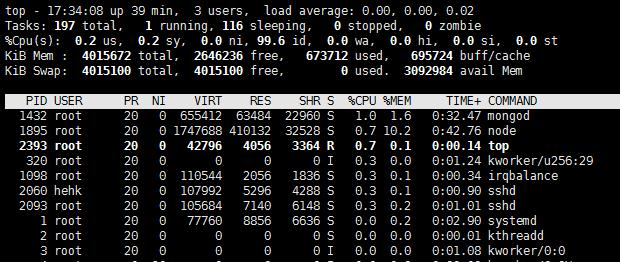
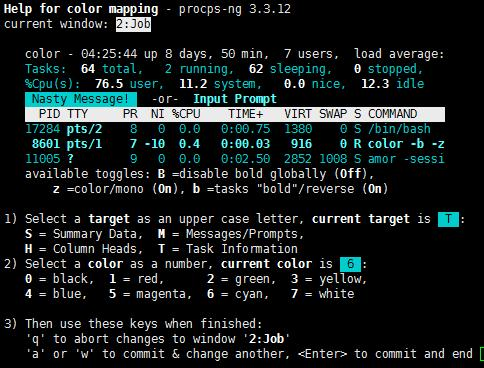

前几天调程序性能的时候使用到了top这个命令，觉得从这个命令中，我们能看到很多信息。top的功能也是很强大的，之前一直不了解，只是简单的使用top命令显示进程信息，接下就学一学top命令的详细用法。
在Linux终端窗口上输入top命令：
root@hehk:~# top
按下回车键之后会弹出一个实时刷新的列表如下图：

然后我们看看显示的都是些什么东西：
第一行：
| top | 命令 |
|---|---|
| 17:34:08 | 系统时间 |
| 39min | 当前系统运行时长 |
| 3 user | 用户数目 |
| load average | 平均负载 |
系统时间 对于我们来说用处不大，我们可以使用date命令获取更详细的时间
当前系统运行时长 可以通过这个时间来推断我们的系统启动的时间。如果是服务器的话，就可知道上次重启的时间。
用户数 可以知道当前有几个用户的程序在运行。
平均负载 这个相对来说是比较重要的指标了，从图中我们可以看到后面有三个数字，第一个是最近1分钟内的平均负载，第二个是最近5分钟的平均负载，第三个是最近15分钟的平均负载。
平局负载的常用分析方法：
load average数据是每隔5秒钟检查一次活跃的进程数，然后按特定算法计算出的数值。如果这个数除以逻辑CPU的数量，结果高于5的时候就表明系统在超负荷运转了。
如果发现一分钟内的平均负载很大，五分钟内的平均负载较小，十五分钟内的平均负载很小，说明一分钟到五分钟内有程序出现异常，导致负载过大。
第二行：
| tasks | 任务相关 |
|---|---|
| 197 total | 总进程个数 |
| 1 running | 运行状态进程数 |
| 116 sleeping | 睡眠状态进程数 |
| 0 stopped | 停止状态进程数 |
| 0 zombie | 僵尸进程数 |
这一行都是任务相关的东西，从不同的状态的数目分析，我们可以知道整个系统进程的运行情况。这里面的僵尸进程的数目一般为0，如果发现不为0，而且数量还很多的时候，很有可能是代码中子进程退出的时候，父进程没有做回收资源，导致子进程一直处于僵尸进程状态。这时候我们要查看一下僵尸进程的pid和ppid来判断是父进程是谁，然后在代码中定位。
第三行：
| %CPU(s) | cpu使用百分比 |
|---|---|
| 0.2 us | 用户空间占用CPU的百分比 |
| 0.2 sy | 内核空间占用CPU的百分比 |
| 0.0 ni | 改变过优先级的进程占用CPU的百分比 |
| 99.6 id | 空闲CPU百分比 |
| 0.0 wa | IO等待占用CPU的百分比 |
| 0.0 hi | 硬中断（Hardware IRQ）占用CPU的百分比 |
| 0.0 si | 软中断（Software Interrupts）占用CPU的百分比 |
| 0.0 st | 窃取时间占用CPU百分比 |
这一行是关于CPU状态的，我么你可以清楚的看到CPU的状态情况，cpu占用较高的进程需要重点关注一下了。
第四行
| KiB Mem | 内存状态信息(kib为单位) |
|---|---|
| total | 物理内存总量 |
| free | 空闲内存总量 |
| used | 使用中的内存总量 |
| buff/cache | 缓存的内存量 |
当一个进程运行一段试讲就挂掉，我们就需要注意一下这一行，有可能是程序OOM(out of memory)了，当空闲内存容量等于0的时候，系统会杀掉一些进程来保证内存可用，一般情况是优先杀掉内存占用高的进程。
第五行
| KiB Swap | swap交换分区信息 |
|---|---|
| total | 交换区总量 |
| free | 空闲交换区总量 |
| used | 使用的交换区总量 |
| avail Mem | 有效内存容量 |
主要列表
| PID | 进程的ID号，简称PID是进程的唯一标识 |
| USER | 进程所属用户 |
| PR | 进程的优先级 |
| NI | nice值---负值表示高优先级，正值表示低优先级 |
| VIRT | 进程使用的虚拟内存总量 =swap+res |
| RES | 进程使用的、未被换出的物理内存大小 =code+data |
| SHR | 共享内存大小 |
| S | 进程状态。D=不可中断的睡眠状态 R=运行 S=睡眠 T=跟踪/停止 Z=僵尸进程 |
| %CPU | 上次更新到现在的CPU时间占用百分比 |
| %MEM | 进程使用的物理内存百分比 |
| TIME+ | 进程使用的CPU时间总计，单位1/100秒 |
| COMMAND | 进程名称（命令名/命令行） |
OK整个top命令的界面我们介绍完了，我们可以通过主表中找到我们自己的进程，分析进程的各项指标来了解自己项目代码的运行状态。
$ 版本信息
top -v
top -h
### 这两个命令的功能是一样的，都是输出top的版本信息。
$ 刷新时间
top -d num
### -d的参数后面必须加时间，以秒为单位。然后界面以设定的时间刷新。
top -s
### -s 后面不能加参数 默认为5秒。然后界面以5秒时间刷新。
$ 指定刷新次数
top -n num
### 后面的num就是刷新的次数，比如 `top -n 5` 界面就会刷新5次后退出。
$ 显示某个用户下的进程
top -u username
### 会显示我们指定用户下的进程状态。
$ 显示指定的进程信息
top -p pid
### pid 就是我么指定进程的pid号。
$ 显示完整用户名/命令
top -c
$ 以积累模式显示程序信息
top -S
$ 关闭交互式指令
top -s
### 交互式指令不能使用了
$ 以批处理模式显示程序信息
top -b
### 刷屏打印程序信息，比较适合输入日志文件。
$ 隐藏空闲的任务
top -i
$ 按照某种属性排序
top -O
### 这个可以打印出可排序的属性列列表
top -o columns
### 例如 top -o %CPU 就可以按照CPU使用率来排序显示
一般这种命令直接加参数的形式使用的较少，通常使用交互式命令比较多。
显示帮助页面
h和？都可以进帮助页面，这里面介绍了很多交互命令，有不懂的可以直接按h来获得帮助。
下面我就简单介绍几个有意思的和有用的交互命令。
改变主题颜色
按下小z，我们发现界面颜色变了，再按一下小z就会还原，一般默认的颜色是红色。可以按大Z进入设置界面如下：

高亮主排序的列
按下小x会发现有一列高亮，默认是cpu的列，因为默认是按CPU使用率排序的，我们可以按shift+<或shift+> 进行排序列的切换，这个功能很方便，也很常用。
CPU的使用情况
数字1可以将CPU展开，显示每一个CPU的使用情况。 t可以用进度条的形式显示CPU的使用情况。
内存的使用情况
m可以让内存的状态，以进度条的形式显示。
其他常用交互命令
Ctrl+L 擦除并且重写屏幕。
h或者? 显示帮助画面，给出一些简短的命令总结说明。
k 终止一个进程。系统将提示用户输入需要终止的进程PID，以及需要发送给该进程什么样的信号。一般的终止进程可以使用15信号；如果不能正常结束那就使用信号9强制结束该进程。默认值是信号15。在安全模式中此命令被屏蔽。
i 忽略闲置和僵死进程。这是一个开关式命令。
q 退出程序。
r 重新安排一个进程的优先级别。系统提示用户输入需要改变的进程PID以及需要设置的进程优先级值。输入一个正值将使优先级降低，反之则可以使该进程拥有更高的优先权。默认值是10。
S 切换到累计模式。
s 改变两次刷新之间的延迟时间。系统将提示用户输入新的时间，单位为s。如果有小数，就换算成m s。输入0值则系统将不断刷新，默认值是5 s。需要注意的是如果设置太小的时间，很可能会引起不断刷新，从而根本来不及看清显示的情况，而且系统负载也会大大增加。
f或者F 从当前显示中添加或者删除项目。
o或者O 改变显示项目的顺序。
l 切换显示平均负载和启动时间信息。
m 切换显示内存信息。
t 切换显示进程和CPU状态信息。
c 切换显示命令名称和完整命令行。
M 根据驻留内存大小进行排序。
P 根据CPU使用百分比大小进行排序。
T 根据时间/累计时间进行排序。
W 将当前设置写入~/.toprc文件中。这是写top配置文件的推荐方法。